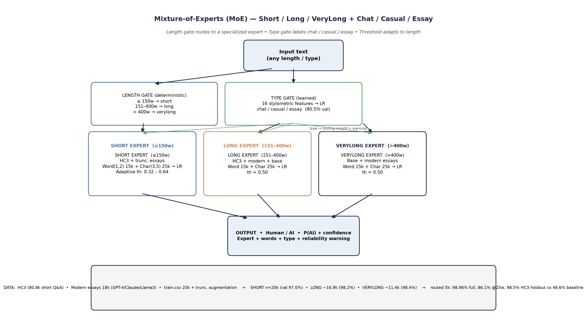
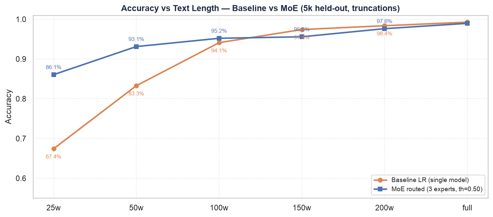
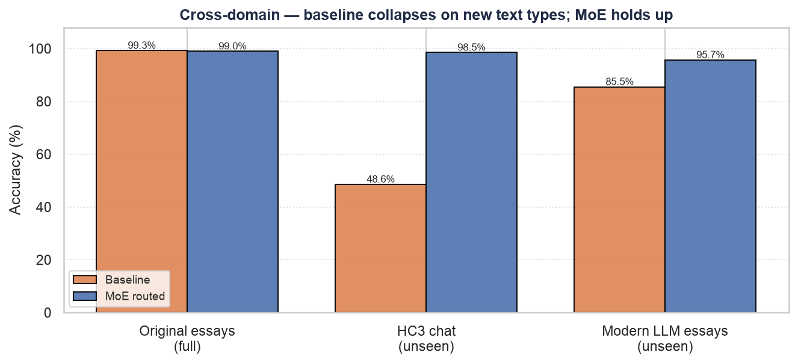
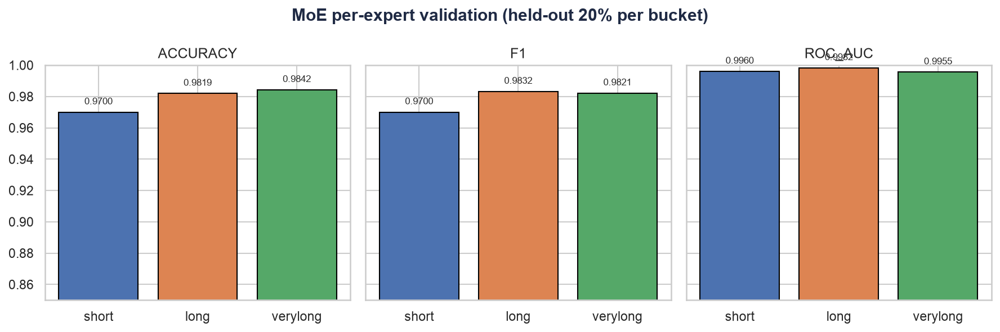
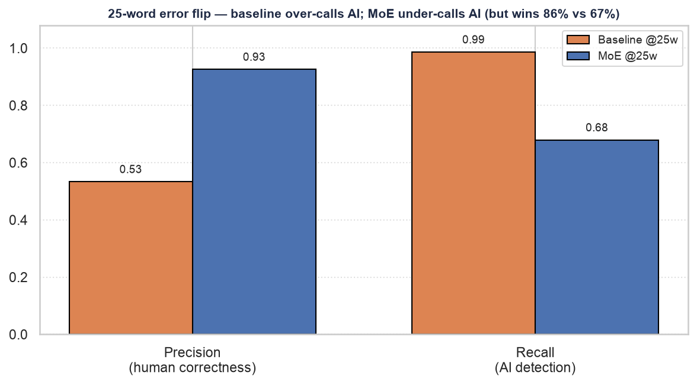
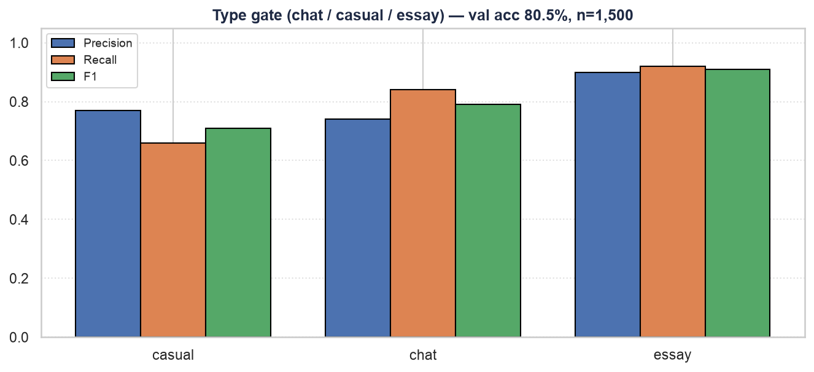
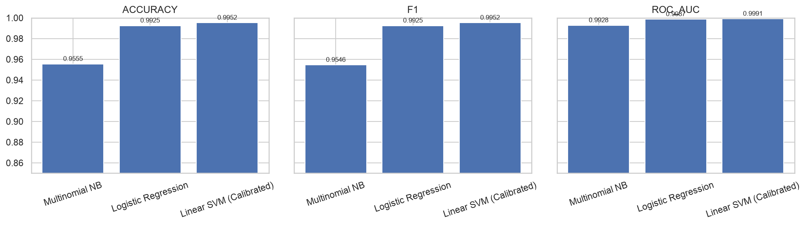
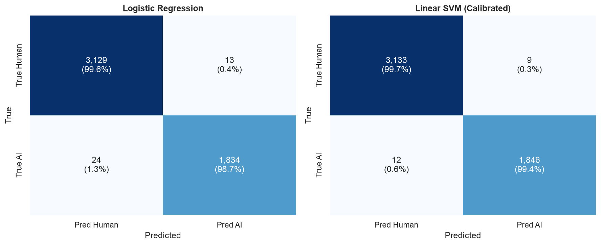
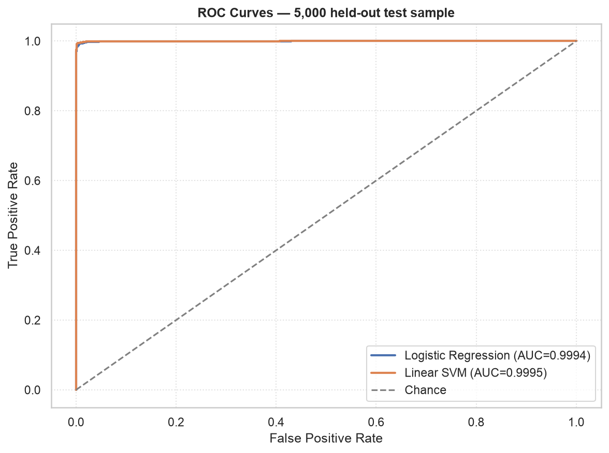
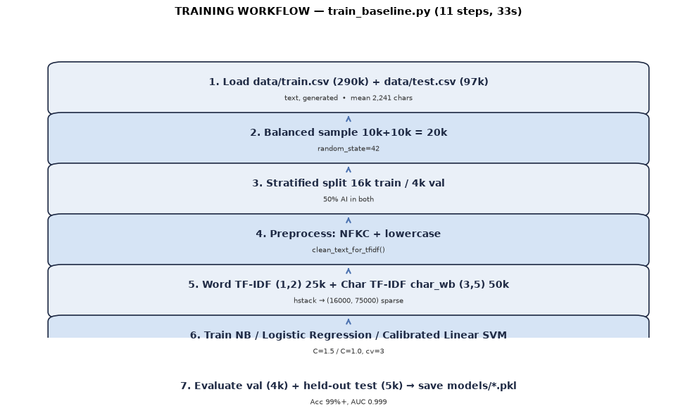

▶ Live inference
Runs on the Vercel serverless function (/api/predict) with the bundled .pkl models (also mirrored in the GitHub cloud). Paste any text — chat, short answer, or essay.
📊 Headline results
5k held-out essays — same truncations evaluated for baseline and MoE routed.
| Condition | Baseline | MoE routed | Δ |
|---|---|---|---|
| Full text | 99.26% | 98.96% | ≈ tie |
| First 25 words | 67.42% | 86.06% | +18.6 |
| First 50 words | 83.28% | 93.12% | +9.8 |
| First 1 sentence | 59.82% | 81.64% | +21.8 |
| HC3 holdout (unseen chat) | 48.56% | 98.52% | +49.9 |
| Modern holdout (GPT-4 / Claude) | 85.52% | 95.70% | +10.2 |
Short expert
97.0%
Accuracy · F1 97.0% · AUC 0.996 (n=4,000 val)
Long expert
98.2%
Accuracy · F1 98.3% · AUC 0.998 (n=3,373)
Verylong expert
98.4%
Accuracy · F1 98.2% · AUC 0.996 (n=2,285)
🧩 Architecture
Length gate (deterministic)
≤150w → short · 151–400w → long · >400w → verylong. Each expert: Word TF-IDF (1,2) 15k + Char TF-IDF (3,5) 25k → Logistic Regression (C=1.5).
Type gate (learned)
LR over 16 stylometric features → chat / casual / essay. Accuracy 80.5%. Used for interpretability & warnings; routing is by length.
Thresholds & warnings
Short uses adaptive threshold 0.32 → 0.64 by length; long/verylong use 0.50. Inputs <25w flagged WARNING, ≤50w CAUTION.
Data: HC3 short Q&A (80.8k, median 117w) · Modern LLM essays (18k GPT-4/Claude/Llama3) · train.csv 20k + truncation augmentation (50/100/150w, 200/300w).
🖼 Figures

Length gate → 3 TF-IDF+LR experts; type gate (80.5%) labels chat/casual/essay. Output: label + P(AI) + expert + type + warning.

MoE stays above baseline at every short length: 67.4% → 86.1% @25w, 83.3% → 93.1% @50w. Curves merge after 150w; full-text both ~99%.

Original essays tie (99.3% vs 99.0%). Unseen HC3 chat: 48.6% → 98.5%. Modern holdout: 85.5% → 95.7%.

Short 97.0% / Long 98.19% / Verylong 98.42% accuracy; F1 and AUC all above 0.995. No weak specialist.

Baseline over-calls AI (P 0.53, R 0.99); MoE under-calls AI (P 0.93, R 0.68) — higher accuracy (86.1% vs 67.4%) and F1 (0.78 vs 0.69), rarely falsely accusing humans.

Essay F1 0.91 (easiest), chat 0.79, casual 0.71 (overlaps both). 16 stylometric features.

Accuracy: NB 95.55%, LR 99.25%, SVM 99.52%. LR chosen for direct P(AI) without calibration.

LR: 37 errors (FP 13, FN 24). SVM: 21 errors (FP 9, FN 12). Balanced; test is ~63% human.

AUC LR 0.9994 / SVM 0.9995 — near-perfect ranking on full text.

Balanced 20k, stratified 16k/4k, NFKC+lowercase, 75k TF-IDF, LR/SVM, val + 5k held-out → save .pkl.
📄 Reports & papers
| Document | What it is | Download |
|---|---|---|
| report.pdf | Main project report (12p: baseline + MoE appendix) | PDF ↓ |
| Research Paper | 7p conference paper — baseline vs MoE, ablation, cross-domain | PDF ↓ |
| Detailed Paper | 9p — formal method, per-length ablation, calibration | PDF ↓ |
| MoE Appendix | 6p standalone appendix | PDF ↓ |
| Run Guide | Code workflow — setup → train → test → API → UI | PDF ↓ |
All PDFs are also available in reports/ in the GitHub repo.
🚀 Run the live demo
The interactive demo runs locally (Streamlit + Python models). Models are in Git — no retraining needed.
# 1. environment
python3 -m venv venv
source venv/bin/activate
pip install -r requirements.txt "datasets>=2.16" huggingface_hub pyarrow reportlab pypdf seaborn
# 2. interactive demo → http://localhost:8501
streamlit run app/app.py
# 3. CLI inference
PYTHONPATH=. python3 moe/predict_moe.py "I think sports are great because they keep kids busy after school"
# → {"label": "Human-Written", "prob_ai": 0.0054, "expert": "short", ...}Data
data/train.csv (290k) / data/test.csv (97k) via Drive — see repo data/README.md. Samples tracked in Git.
Models
models/*.pkl (~3.9MB) + models/moe/ (~5.1MB) tracked. Inference runs without retraining.
Notebooks
jupyter notebook → notebooks/01…06: EDA → stylometrics → TF-IDF → semantic → transformers → evaluation.